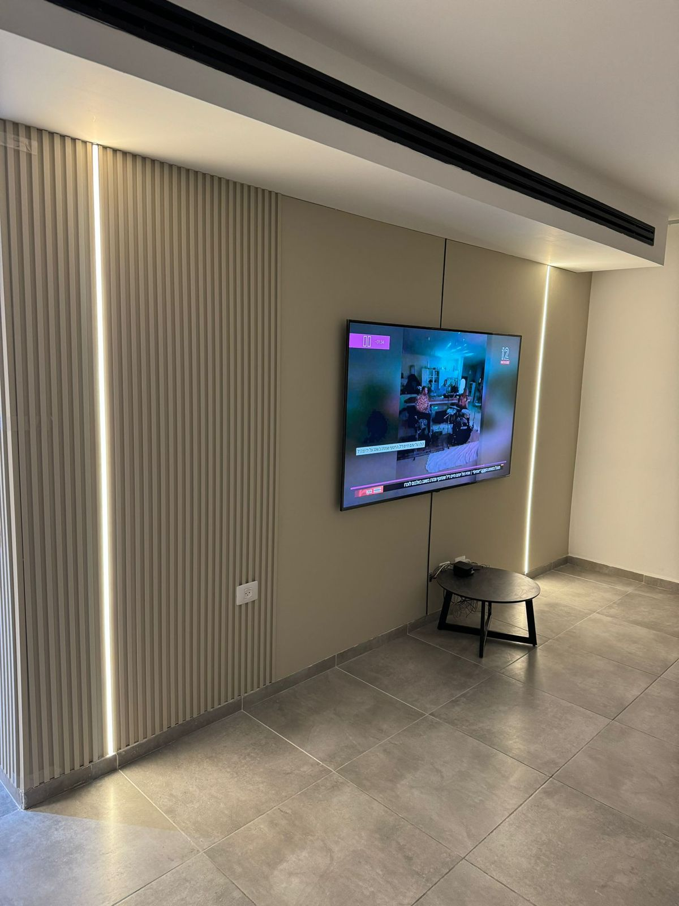
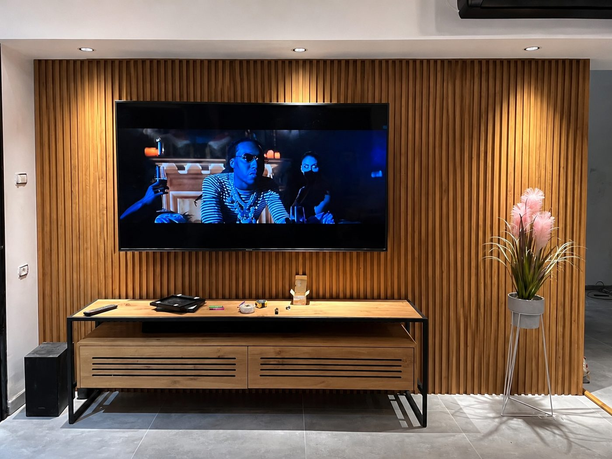
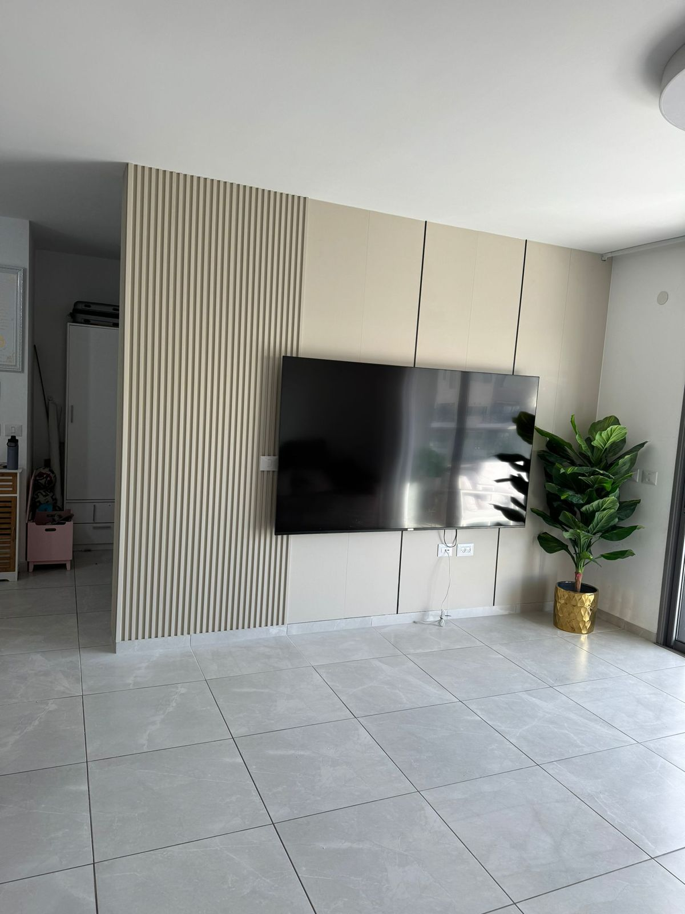
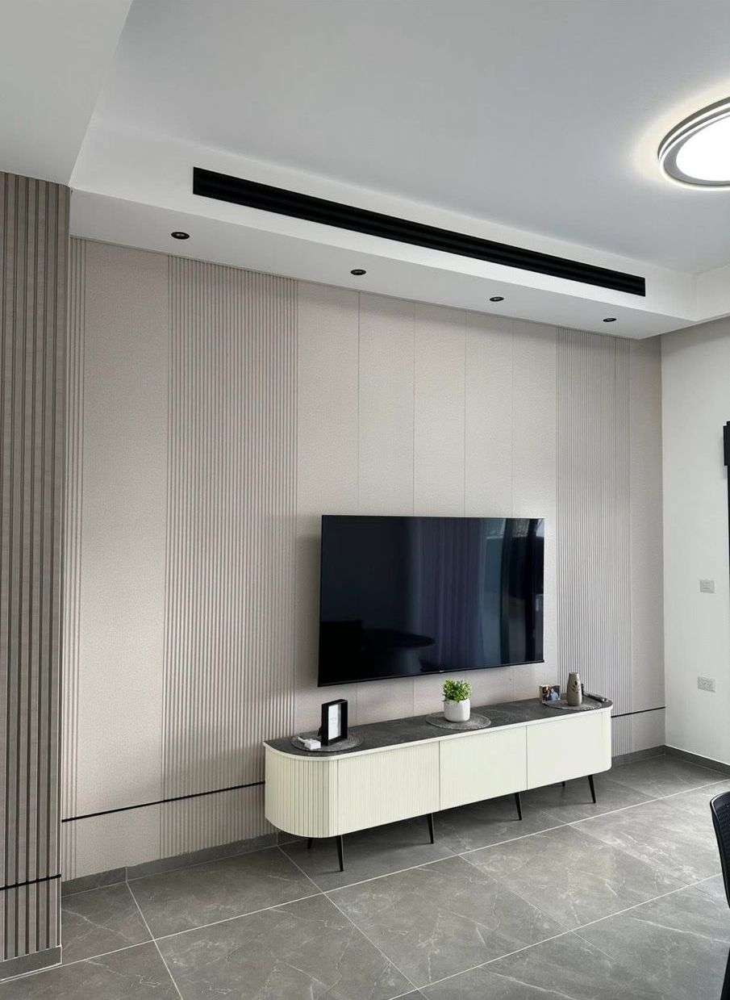
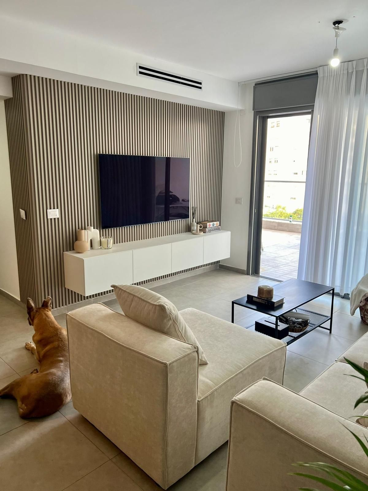

חיפוי קיר טלוויזיה בסרגלים, פלטות ולד
חיפוי קיר טלוויזיה הוא הדרך המהירה להפוך את הסלון: סרגלים מחורצים, פלטות עם פסי ניתוק ותאורת לד, שמותקנים על הקיר הקיים בלי בנייה. שלחו תמונה של הקיר וקבלו הדמיה חינם.

שלושה סגנונות לקיר טלוויזיה


- קיר מלא בסרגלים. קווים אנכיים מקצה לקצה. מראה חם, עם עומק וצל, והטלוויזיה תלויה ישר על החיפוי.
- פלטה במרכז, סרגלים בצדדים. משטח שקט מאחורי המסך, וסרגלים שממסגרים אותו. פס ניתוק שחור דק מפריד ביניהם.
- חיפוי עם תאורת לד. פסי לד אנכיים בין הסרגלים או בצדי הקיר, שנותנים אור רך בערב ומדגישים את הקיר.
מה כדאי להחליט לפני ההתקנה
- גודל המסך וגובה התלייה. לפיהם מתכננים את החלוקה של הקיר ואת מיקום הפלטה.
- שקעים וחיבורים. כדאי לדעת איפה נמצאים השקעים בקיר ואיפה תעמוד המזנון, כדי לתכנן את החיפוי סביבם.
- כל הקיר או רק החלק המרכזי. קיר מלא נותן מראה אחיד, וחיפוי חלקי מתאים לקיר רחב במיוחד.
- גוון. עץ חם, שחור, או גוון בהיר שמשתלב עם הריצוף. אפשר לבקש דוגמיות עד הבית ולראות אותן באור של הסלון.


איך זה עובד
- שולחים תמונה של הקיר בוואטסאפ, עם מידות בערך וגודל המסך.
- מקבלים הדמיה חינם של קיר הטלוויזיה עם החיפוי והגוון.
- מדידה והצעת מחיר בכתב.
- התקנה מהיום למחר, כי החומרים במלאי, עם 5 שנות אחריות.
רוצים לדעת ממה מורכב המחיר? קראו את מדריך המחירים לחיפוי קירות, או חשבו את שטח הקיר במחשבון החיפוי. מחפשים מראה קלאסי לחדר השינה? ראו קיר קרניזים.
רוצים קיר טלוויזיה מחופה?
שלחו תמונה של הקיר ותקבלו הדמיה חינם של קיר הטלוויזיה עם החיפוי והגוון, בלי התחייבות.
חיפוי קיר טלוויזיה: שאלות נפוצות
מה זה חיפוי קיר טלוויזיה?
חיפוי קיר טלוויזיה הוא שכבה דקורטיבית שמותקנת על הקיר הקיים מאחורי הטלוויזיה, בלי בנייה או טיח מחדש. משתמשים בסרגלים מחורצים, בפלטות עם פסי ניתוק או בשילוב שלהם, ולפעמים מוסיפים פסי לד אנכיים. התוצאה היא קיר מרכזי שמסדר את כל הסלון סביבו.
מה עדיף לקיר טלוויזיה: סרגלים או פלטות?
סרגלים מחורצים נותנים קווים אנכיים עם עומק וצל, ומתאימים כשרוצים קיר חם ובולט. פלטות נותנות משטח גדול ושקט. ברוב קירות הטלוויזיה שלנו משלבים את שניהם: פלטה במרכז מאחורי המסך וסרגלים בצדדים, עם פס ניתוק שחור ביניהם.
אפשר לתלות את הטלוויזיה על החיפוי?
כן. בעבודות שלנו הטלוויזיה תלויה ישר על החיפוי. לפני ההתקנה כדאי להחליט על גודל המסך ועל הגובה שלו, כדי שנתכנן את החלוקה של הקיר סביבו.
אפשר לשלב תאורת לד בקיר הטלוויזיה?
כן. אפשר לשלב פסי לד אנכיים בין הסרגלים או בצדי הקיר, כך שהקיר עצמו הופך למקור אור רך בערב.
כמה עולה חיפוי קיר טלוויזיה?
המחיר תלוי ברוחב ובגובה הקיר, בסוג החיפוי, בגוון ובתוספות כמו תאורת לד ופינות. שלחו תמונה ומידות בערך בוואטסאפ ונחזור עם הערכה. אחרי מדידה בשטח תקבלו הצעת מחיר מסודרת.
כמה זמן לוקחת ההתקנה?
החומרים במלאי, ולכן אפשר להתקין כבר מהיום למחר. משך העבודה עצמה תלוי בגודל הקיר ובכמות הפרטים, ונגיד לכם אותו בהצעת המחיר.
באילו אזורים אתם מתקינים?
בגבעתיים, רמת גן, בני ברק, פתח תקווה, תל אביב, קריית אונו, גבעת שמואל, הרצליה, הוד השרון, חולון, בת ים וראשון לציון.